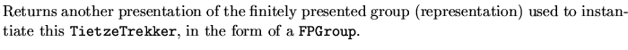

What and Where
The class class TietzeTrekker
is defined in magnus/back_end/Group/include/TietzeTrekker.h.
A TietzeTrekker is a wrapper for a BlackBox which invokes Frank Rimlinger's TietzeTrek with a group presentation.
Special Notes
Revision 1.2 is still in a state of flux.
Usage:
Instantiate a TietzeTrekker within, e.g., a FPGroup method by
TietzeTrekker( look() ) TT;
Make sure that TT.sanityCheck() returns TRUE. There is now an asynchronous process associcated with TT which is continuously generating presentations, along with statements of certain facts (factoids) which can readily be deduced from certain presentations. Get the `next' presentation from getPresentation(). To be `notified' of any factoids, first call getFactoid (see comment thereon), then call knownTo*. If you don't like the answer, call getFactoid again, etc.
Public Members
TietzeTrekker (const FPGroupRep&)Constructor
Bool sanityCheck( )Method
Bool getFactoid(Bool queuePresentations, long giveUpLimit = 100)Method
The following indicate what facts have been discovered so far by 0
or more calls to getFactoid (FALSE means ``don't know (yet)''):
Bool knownToBeTrivial( )Method
Bool knownToBeCyclic( )Method
Bool knownToHaveFreeFactor( )Method
Bool knownToBeFinite( )Method
Bool knownToBeFree( )Method
int getOrder( )Method
int getRank( )Method
FPGroup getPresentation( )Method
